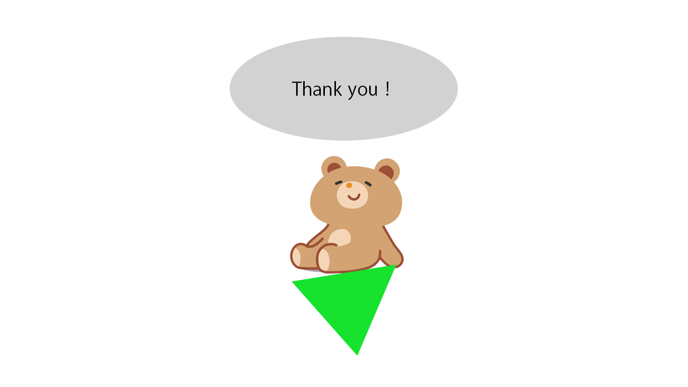

WORKS
Web site

サンプルサイトは現在制作中です。
Banner
サンプルバナー（夏祭り）
こちらから
AdobePhotoshopを使い製作いたしました。
Writer
エンタメ系記事×20本
こちらから
クラウドソーシングサービスを通して、ブロガー様の記事の作成のお仕事を受注しました。
Wordpressを使った記事作成をさせていただきました。
Movie
vyondによるアニメーション制作×5本
こちらから
クラウドソーシングサービスを通して、アニメーション制作のお仕事を受注しました。
VYONDを使いアニメーション制作（アニメーション制作全般・字幕）を行いました。
